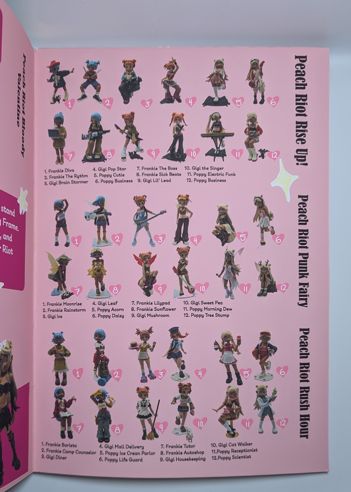

Art Figures is a folded zine created during the 2025 Fall Semester in Steven Hoskin’s GDES 220 Design Practices Class. The project was to create a zine of a collection. The collection depicted is my personal one of artistic figures designed by small artists. I designed the zine in the style of a Japanese catalogue.